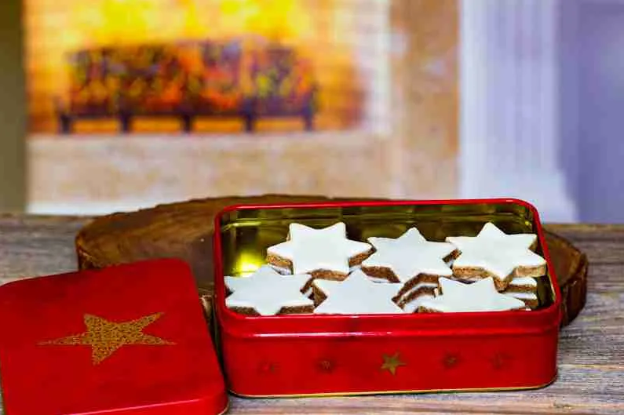

Cinnamon Star "Zimsterne" Cookies

Ingredients
- For the dough:
- 400g ground Almonds
- 390g Sugar
- 3 Egg Whites
- 12g Ground Cinnamon
- For the icing:
- 2 Egg Whites
- 250g Confectioners Sugar
Instructions
Making the Dough
- Put all dough ingredients into a large bowl.
- Mix the ingredients until they have come together into a dough.
- Shape dough into a thick disk, wrap in saran wrap, and put into the refrigerator.
- Let the dough rest for at least 6 hours or overnight.
Making the Icing
- Whisk egg whites until they are fluffy and shiny.
- Add a third of the confectioners sugar to the eggs and whisk to combine.
- Repeat until all sugar is incorporated.
Making the Cookies
- Take the dough out of the refrigerator and roll it out onto a board that will fit into your freezer.
- Spread the icing onto the rolled dough, making sure it is even.
- Set the remaining icing aside.
- Put the iced dough into the freezer for two hours.
- After two hours, remove the cookies from the freezer and cut the cookies:
- Use a medium-sized star cookie cutter.
- Dip the cookie cutter in a small bowl of water.
- Cut a star out of the frozen dough and place it onto the baking sheet.
- Remaining dough can be kneaded and rolled again. Then, spread the remaining icing on it and repeat the process.
- Let the cookies dry for two hours.
Baking
- Preheat oven to 350°F.
- Bake cookies for about 8 minutes, or until the cookies can be easily lifted from the baking sheet. Be careful not to let the frosting tan.
- Let the cookies cool completely, then store in an airtight container.